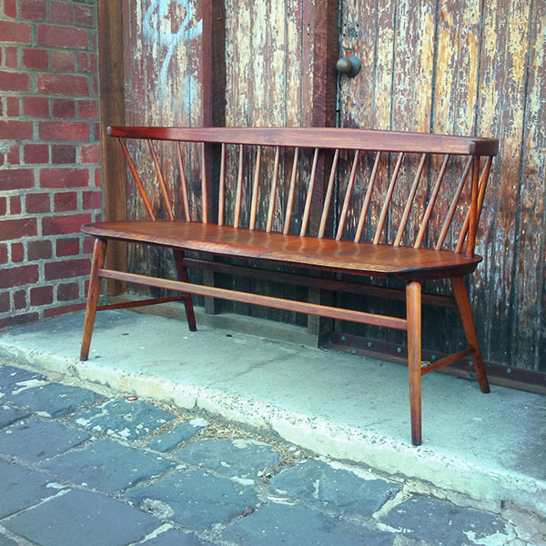

we restore all types of furniture
We have a passion for repairing and restoring mid-century and antique furniture. We can breathe new life into your ageing treasure, increasing the value of your valued furniture. By using a traditional hands-on approach to restoration, we ensure that no 'history or sentiment' is lost from the piece and if you should ever want to sell, ensuring maximum return on your investment.
Get in touch for a free quote, contact us now or send a photo and brief description of the work required to design@tanedesign.com
Below are a few examples of our work, but we welcome the challenge of all types of furniture.
Original Cassina Willow Chair
Before
After
"Gary was a pleasure to deal with at all stages of the design process. It was great to have someone share my ideals around designing and developing a sustainable product and his good humour always made our meetings a lot of fun. I couldn't recommend him highly enough!"Matthew Cairns
Solid Timber table top re-finish
Before
After
" I am very happy with the wonderful job Gary did restoring our table. The service was great and the table looks fantastic. "Meriel - Williamstown
1950's chest stripped & re-finished
Before
After
" I commissioned Tane Design to restore four pieces of mid century and early Australian furniture that held incredible sentimental value. Gary was wonderful and took such great care to understand what I was wanting to achieve and how they were going to fit into the overall interior of the house. The end result was fantastic and I would not hesitate to use or recommend Gary's services."Jo Rees
Mid-century Upholstered Armchair
Before
After
"We were really pleased with the restoration of our chairs by Tane Design. Gary Pennington's enthusiasm and respect for the materials with which he works is evident in the care he takes to deliver a quality result."Deirdre Gillespie
Original Danish Bench
Before

After
"I had Gary repair the woodwork on a much loved mid-century sofa. The restoration was done exceptionally well, clearly demonstrating Gary's knowledge of vintage furniture restoration. A very passionate and lovely person to deal with."Helen Ho
Vintage Dining Table
Before
After
"Gary from Tane Design restored a much loved mid-century teak table which had seen better days. He did a wonderful job and obligingly picked up and delivered it back on time and in great condition. He is a lovely person to deal with and I share his appreciation of fine lines, good wood and the preservation of good things."Nicole Gibson
Vintage Queenslander Deck Chair
Before
After
"We came across Tane's display at the Kensington Arts and Crafts Market and were impressed by the quality of work and unique designs. We had the perfect piece of furniture that needed to be re-upholstered and decided to give them a try. It was a pleasure doing business with these guys- the service was friendly and prompt, and the final product looks great! Highly recommend."Charity Van Acker
Retro Drinks Cabinet
Before
After
"Gary did a wonderful job in restoring a much loved Windsor chair that had been quite badly damaged. Answered my numerous questions & e-mails promptly & with patience and understanding. I have no hesitation in recommending him & his business."Anne Williams